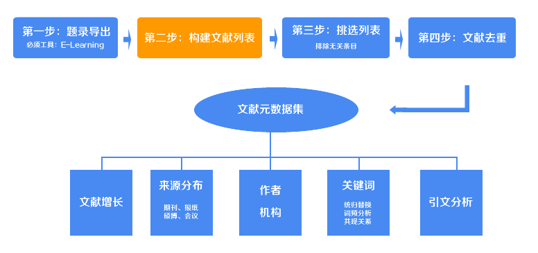
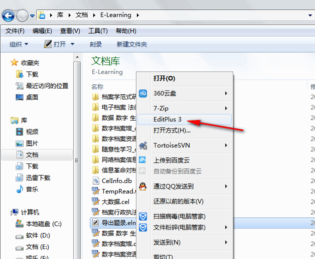
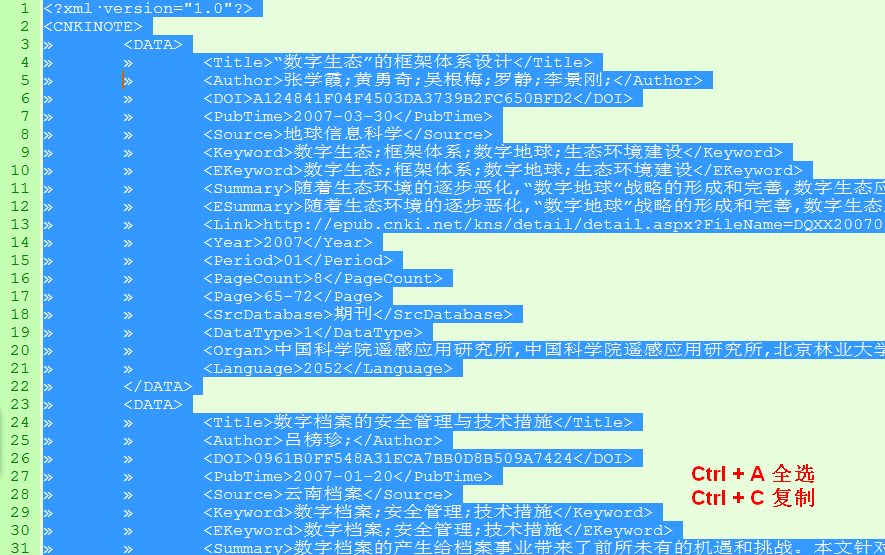
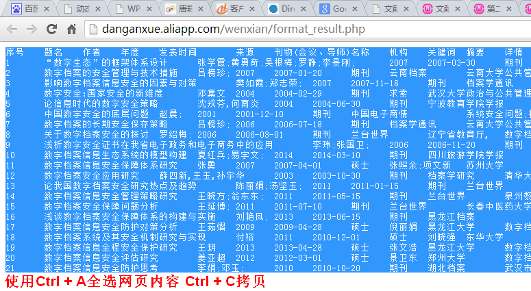
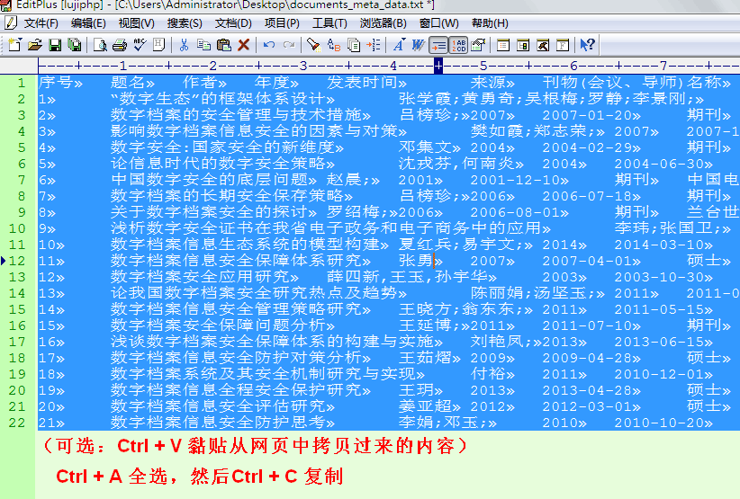

第二步：构建拥有完整信息的文献列表

在上一步中，你已经将“导出题录.eln”保存到了“D:\我的文档\E-learning\导出题录.eln”（这里只是假设位置，你可能保存到了其他地方）。现在，使用EditPlus打开这个文件（EditPlus是一个文本编辑器，功能比较强大，其实你也可以使用其他的文本编辑器打开这个eln文件，甚至可以使用windows系统自带的记事本打开，我们的目标是打开文件，看到里面的内容，不管你使用什么软件都可以）。
打开文件之后，你会看到里面的内容，数据格式为xml格式（如下面文本框中给出的示例格式一样）。现在什么都不要想，通过键盘上的“Ctrl+A”全选所有内容，“Ctrl+C”拷贝它，然后黏贴到下面的文本框中。（如下图）


复制好了吗？把复制好的内容黏贴到下面的文本框中。黏贴的时候如果你的内容极其多，很有可能出现浏览器假死的现象，所以稍微等一下（推荐使用firefox、chrome等浏览器，不推荐IE浏览器）。不要急着点提交按钮，继续往下看。
勾选“直接下载txt结果”前的选项的话，点击提交后会直接提示下载一个txt文档，如果不勾选，提交后会把处理好的数据直接显示在网页中。
这里推荐勾选，因为即使你不勾选，后面也要把结果数据先拷贝到一个txt文件中。（为什么不直接下载excel文档呢？因为不同的服务器处理后文件格式不一样，excel下载以后可能出现乱码，因此使用txt比较保险。况且，我们下一步中还要使用这个txt。）
不勾选“直接下载txt”的情况下（勾选了的不必要看这一段），点击提交，会打开显示了处理结果数据的网页。再次使用“Ctrl+A => Ctrl+C”拷贝整个网页的内容。在你的电脑桌面新建一个.txt文档，打开后把拷贝的内容黏贴在里面。
如果勾选了下载txt的选项，那么会下载一个documents_meta_data.txt，里面保存了经过处理的数据。将它打开，你可以看到每行一条文献，第一列是序号。没错，这就是我们处理过后的一个标准格式，（如下图）这个txt文件我们会在下一步用到，把它放在方便的位置。
打开这个txt文档，再次使用一个“Ctrl+A => Ctrl+C”拷贝整个文件的内容。在你的电脑桌面上新建Excel表格文档，打开，黏贴即可。（整个过程如下示意图）



通过上面的这几个步骤，你就拿到了一个Excel文档，这就是原始文献数据（还需要进一步处理），必要的时候你可能使用它。在下一步中，你需要用到上述的txt文档，因此把它放在方便的位置。